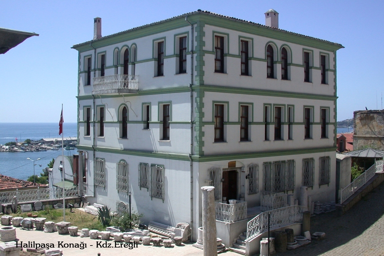

HALİL PAŞA KONAĞI
Üç bini aşkın arkeolojik eserin sergilendiği Karadeniz Ereğli Müzesi’nin de yer aldığı Halil Paşa Konağı 19.yy’da 2. Abdülhamit’in sancak beyi Halil Paşa tarafından yaptırılmıştır. Romai Bizans, Selçuklu, Osmanlı dönemlerine ait çok sayıda tarihi eser vardır.
Konak 3 katlı olup, sofalı plan tipinde inşa edilmiş. 19. yüzyıl sonlarına doğru şehrin önemli isimlerinden olan Halil Paşa Karamanoğlu tarafından yaptırılmıştır.
Halil Paşa Konağı, bir dönem ortaokul ve lise olarak hizmet vermiştir. 1988 yılında ise Kültür Bakanlığı tarafından alınıp geniş kapsamlı bir restorasyon döneminden geçmiştir. 1998 yılında tüm çalışmaları biten konak Ereğli Müze Müdürlüğü’nün yedi adresidir.
Günümüzde müze olarak işlevselliğini koruyan Halil Paşa Konağı’nda şehirdeki arkeolojik kazılar sonucu gün yüzüne çıkmış Grek, Roma ve Bizans dönemleriyle tarihlendirilen eserler bulunmakta. Mezar steller, figürlü mermer sütun başlıkları, çeşitli madeni eşyalar, cam kaplar, takılar ve kandiller müzede görebileceğiniz tarihi parçalar arasında.
İlk katında arkeolojik eserler bulunan müze binasının ikinci katında ise etnografik eserler yer alıyor. Yöreye ait olan saatler, tespih, ölçü-tartı aletleri, yöresel kıyafetler, silahlar, dokuma aletleri etnografik bölümde sergileniyor.